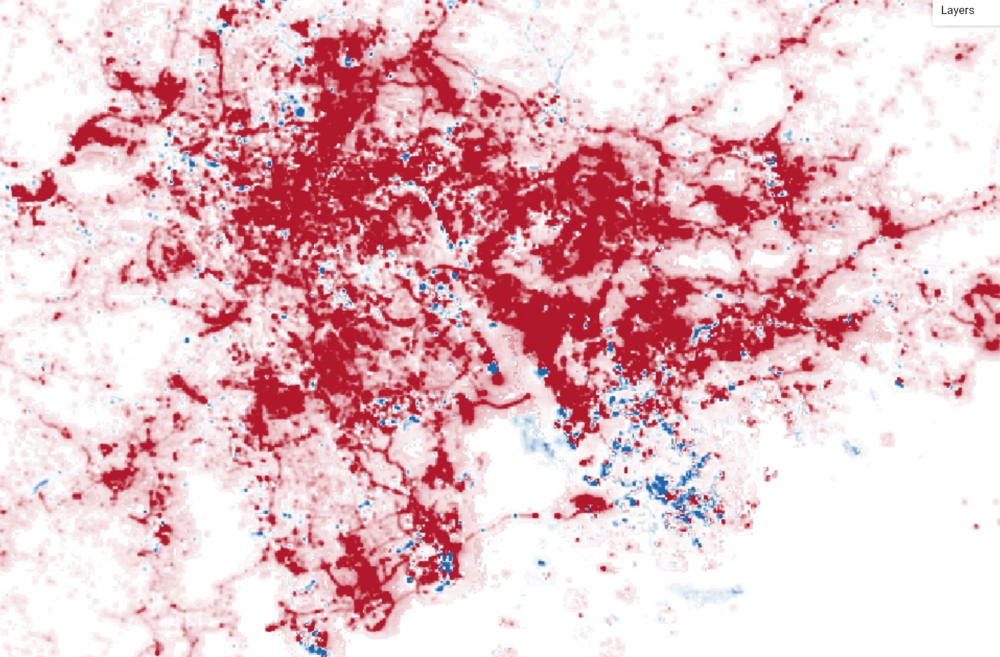
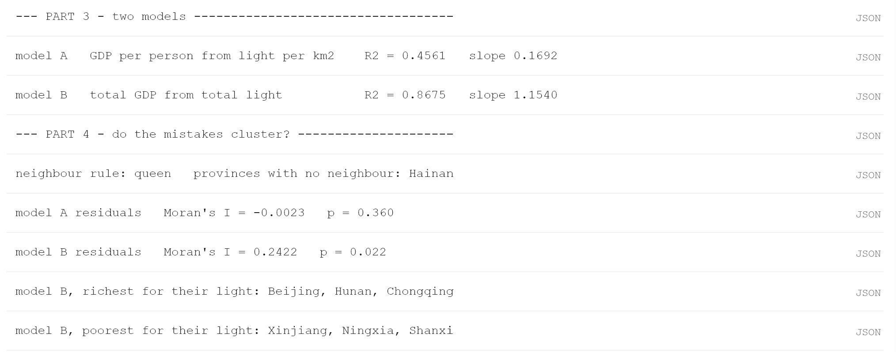

Lab 06 · October 2026
Wealth and Light
The question
Can light produced in a region be used to predict economic output and growth.
The data
I used the provided Google Earth Engine file, which provided light production and GDP information for many locations around the world and in China, as seen here.
The method
We computed a map of the world with differences in light produces in 2014 and 2024, and in China we used the provided GDP information to fit two seperate models. Model A predicted GDP per person through light per square kilometer, while Model B predicted total GDP by total light produced. The R squared values and slope were computed, and then we computed the Moran's I value and p-value of the residuals for both models two times.


What I found
It seems that while Model B has a higher R squared value, it is missing some geographic information as the residuals are clusered in a way that is statistically unlikely, judging by the p-value and Moran's I value of the residual. Model A's residuals seem more evenly distribued, showing it is not lacking extra information but is just as accurate as it is going to get with its current setup.
What this does not show
This does not show that the model is the most accurate it could be, as different modeling choices may still improve accuracy.
AI use: No AI tools were used for this entry, but Google Docs and https://tabletomarkdown.com was used for the tables above.
Reflection
If someone had to act on this, I would now provide them with Model A and attach a caveat that Model B may be more accurate if the missing spatial data is incorporated. This changed compared to Q1 because I discovered that the residuals were clustering and thus the model is inaccurate due to missing some form of geographical information.
When using light produced to predict GDP, places with building codes and culture that favor flashy and bright buildings, such as Las Vegas, will be seen as having a higher GDP than they may actually possess. This will likely be noticed by Federal and Local governments when providing funding, and they may not receive as much support or funding under the assumption that the city can afford to pay more due to the model presenting a misread, exaggerated GDP.